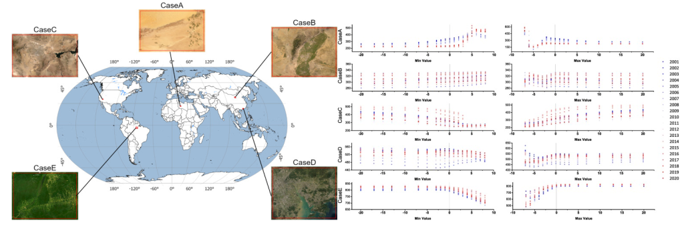
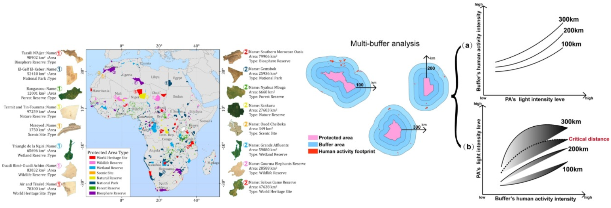

Outstanding Student of Guangdong Province (Graduate Student)
EDITORIAL POSITIONS
2022-now
Editorial Advisory Board Member
Ecological Indicators (Elsevier)
RESEARCH INTEREST
Nighttime Light Remote Sensing:
human footprint, data calibration, light pollution, etc.
Urban Ecological Remote Sensing:
remote sensing ecological index, urbanization intensity, etc.
Google Earth Engine Mapping:
vegetation, water body mapping, etc
RECENTLY UPDATE

Instability of remote sensing based ecological index (RSEI) and its improvement for time series analysis
"Compared to the extensive applied research, work on the instability assessment and improvement of RSEI is particularly scarce and urgently needed. Therefore, in this paper, we analyzed the possible instabilities in the RSEI calculation process and proposed various inversion models to evaluate their accuracy and stability in time-series LSES monitoring."

Africa's protected areas are brightening at night: A long-term light pollution monitor based on nighttime light imagery
"Previous studies have focused on light pollution in PAs and evaluated light radiation using nighttime light imagery. However, given the scale and span of these studies (national scale and over short periods), PA light pollution research should be advanced further. In this paper, we conducted long-term (1992–2018) monitoring and evaluation of light pollution in African PAs using aligned multi-sensor NTL data."
SCIENTIFIC PUBLICATIONS
2022a
Yang, Z., Chen, Y., Zheng, Z., & Wu, Z. (2022). Identifying China’s polycentric cities and evaluating the urban centre development level using Luojia-1A night-time light data. Annals of GIS, 1-11.
Zheng, Z., Wu, Z., Chen, Y., Guo, C., & Marinello, F. (2022). Instability of remote sensing based ecological index (RSEI) and its improvement for time series analysis. Science of The Total Environment, 152595. [SCI Q1 TOP, IF=7.963]
2021a
Zheng, Z., Wu, Z., Chen, Y., Guo, G., Cao, Z., Yang, Z., & Marinello, F. (2021). Africa’s protected areas are brightening at night: A long-term light pollution monitor based on nighttime light imagery. Global Environmental Change, 69, 102318. (SCI Q1, Top, IF2020 = 9.523)
Zheng, Z., Wu, Z., Chen, Y., Guo, G., Yang, Z., & Marinello, F. (2021). A Simple Method for Near-Real-Time Monthly Nighttime Light Image Production. IEEE Geoscience and Remote Sensing Letters. (SCI Q1, IF2020 = 3.966)
Yang, Z., Chen, Y., Guo, G., Zheng, Z., & Wu, Z. (2021). Characteristics of land surface temperature clusters: Case study of the central urban area of Guangzhou. Sustainable Cities and Society, 73, 103140. (SCI Q1, IF2020 = 7.587)
Yang, Z., Chen, Y., Guo, G., Zheng, Z., & Wu, Z. (2021). Using nighttime light data to identify the structure of polycentric cities and evaluate urban centers. Science of The Total Environment, 780, 146586. (SCI Q1, Top, IF2020 = 7.963)
Guo, G., Wu, Z., Cao, Z., Chen, Y., & Zheng, Z. (2021). Location of greenspace matters: a new approach to investigating the effect of the greenspace spatial pattern on urban heat environment. Landscape Ecology, 36(5), 1533-1548. (SCI Q2, IF2020 = 3.851)
2020a
郑子豪, 吴志峰, 陈颖彪, 杨智威, & Francesco Marinello. (2020). 基于 Google Earth Engine 的长三角城市群生态环境变化与城市化特征分析. 生态学报, 41(02):717-729. (北大核心, CSCD 核心库)
Zheng, Z., Wu, Z., Chen, Y., Yang, Z., & Marinello, F. (2020). Exploration of eco-environment and urbanization changes in coastal zones: A case study in China over the past 20 years. Ecological Indicators, 119, 106847. (SCI Q2, IF2020 = 4.958)
Zheng, Z., Wu, Z., Chen, Y., Yang, Z., & Marinello, F. (2020). Detection of city integration processes in rapidly urbanizing areas based on remote sensing imagery. Land, 9(10), 378. (SCI Q2, IF2020 = 3.398)
Yang, Z., Chen, Y., Zheng, Z., Huang, Q., & Wu, Z. (2020). Application of building geometry indexes to assess the correlation between buildings and air temperature. Building and Environment, 167, 106477. (SCI Q1, Top, IF2020 = 6.456)
2019a
Zheng, Z., Chen, Y., Wu, Z., Ye, X., Guo, G., & Qian, Q. (2019). The desaturation method of DMSP/OLS nighttime light data based on vector data: Taking the rapidly urbanized China as an example. International Journal of Geographical Information Science, 33(3), 431-453. (SSCI Q1, IF2020 = 4.186)
Zheng, Z., Yang, Z., Chen, Y., Wu, Z., & Marinello, F. (2019). The Interannual calibration and global nighttime light fluctuation assessment based on pixel-level linear regression analysis. Remote Sensing, 11(18), 2185. (SCI Q1, IF2020 = 4.848)
Zheng, Z., Yang, Z., Wu, Z., & Marinello, F. (2019). Spatial variation of NO2 and its impact factors in China: An application of sentinel-5P products. Remote Sensing, 11(16), 1939. (SCI Q1, IF2020 = 4.848)
Yang, Z., Chen, Y., Wu, Z., Qian, Q., Zheng, Z., & Huang, Q. (2019). Spatial heterogeneity of the thermal environment based on the urban expansion of natural cities using open data in Guangzhou, China. Ecological Indicators, 104, 524-534. (SCI Q2, IF2020 = 4.958)
Yang, Z., Chen, Y., Qian, Q., Wu, Z., Zheng, Z., & Huang, Q. (2019). The coupling relationship between construction land expansion and high-temperature area expansion in China’s three major urban agglomerations. International Journal of Remote Sensing, 40(17), 6680-6699. (SCI Q2, IF2020 = 3.151)
Xie, Z., Ye, X., Zheng, Z., Li, D., Sun, L., Li, R., & Benya, S. (2019). Modeling polycentric urbanization using multisource big geospatial data. Remote Sensing, 11(3), 310. (SCI Q1, IF2020 = 4.848)